Tasting Experience
€ 44,50
2,5 uur onbeperkt gerechten bestellen van onze à la carte kaart. Gerechten met ★ hebben een toeslag van € 2,-.
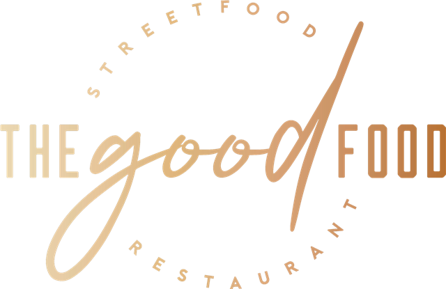
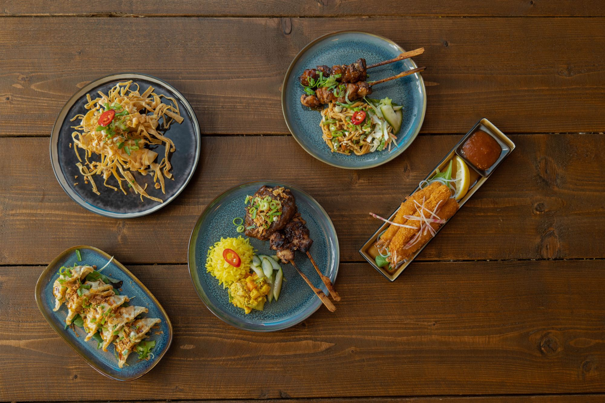
Dorpsstraat 35 · Vreeswijk, Nieuwegein
Deel het eten met elkaar en proef van alles wat. Vers uit de keuken, aan de Kolk in Vreeswijk.
The Good Food is een streetfood restaurant waar u in een gezellige ambiance geniet van wisselende wereldse gerechten. Streetfood staat bij ons voor ongedwongen tafelen en samen de smaken van over de hele wereld proeven.
Wij koken met verse ingrediënten en werken samen met lokale leveranciers, waarbij duurzaamheid hoog in het vaandel staat.
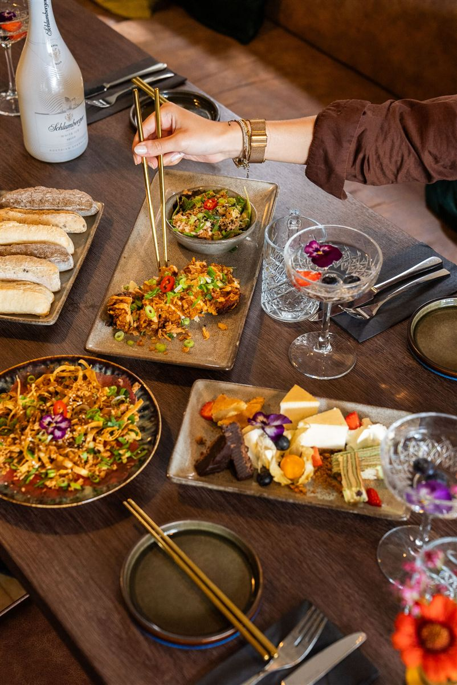
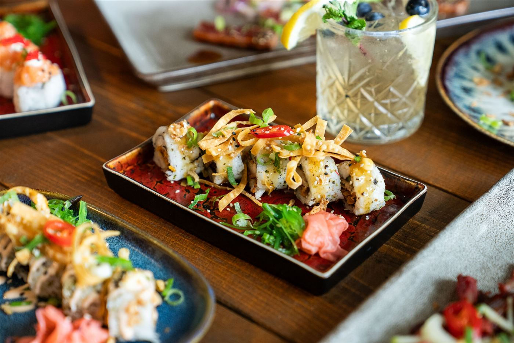
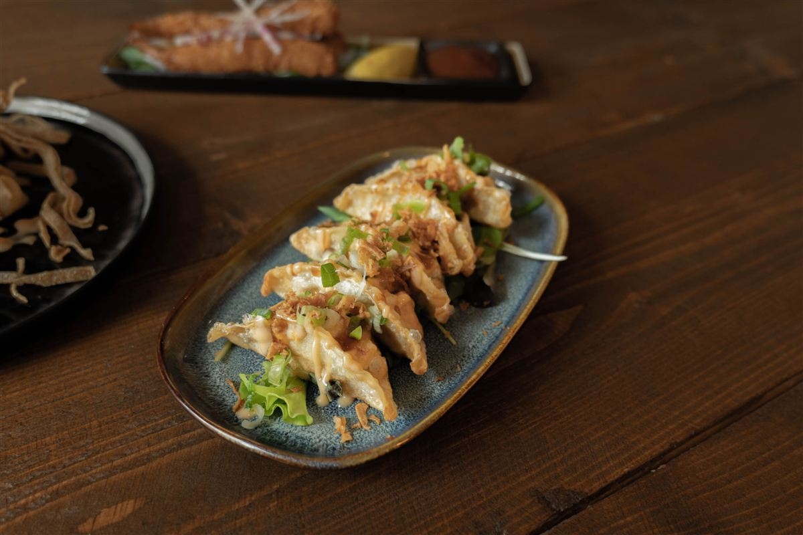
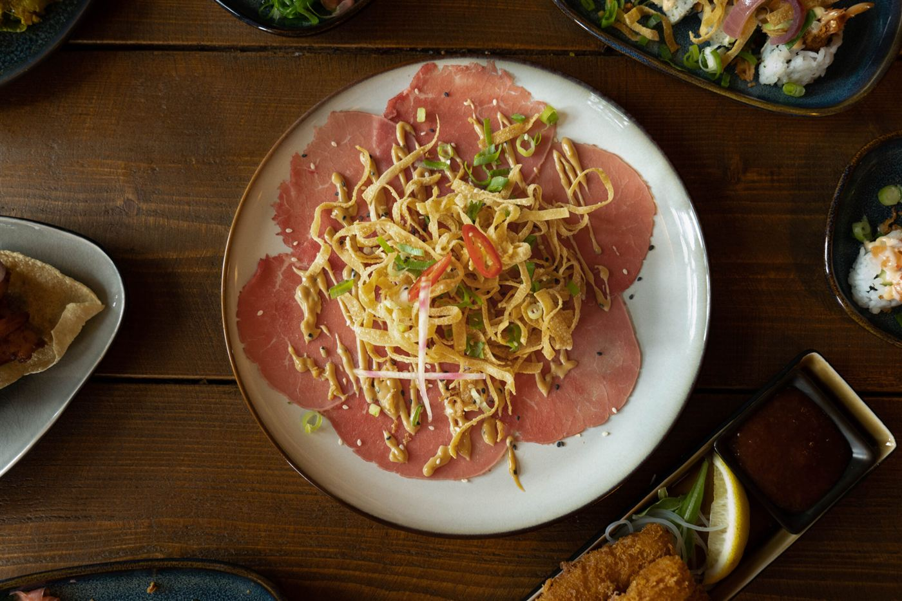
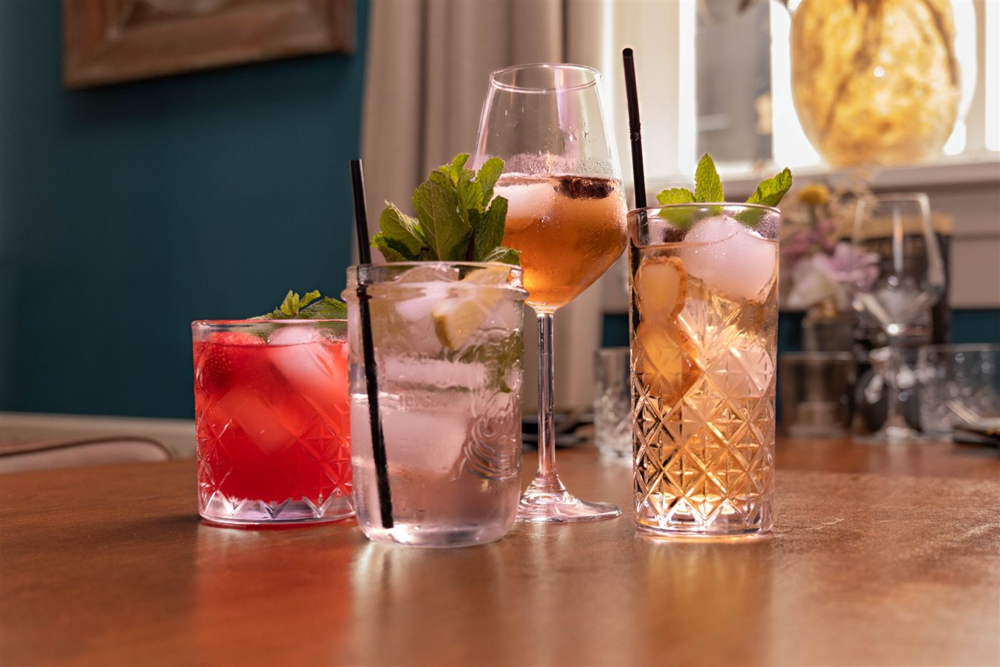
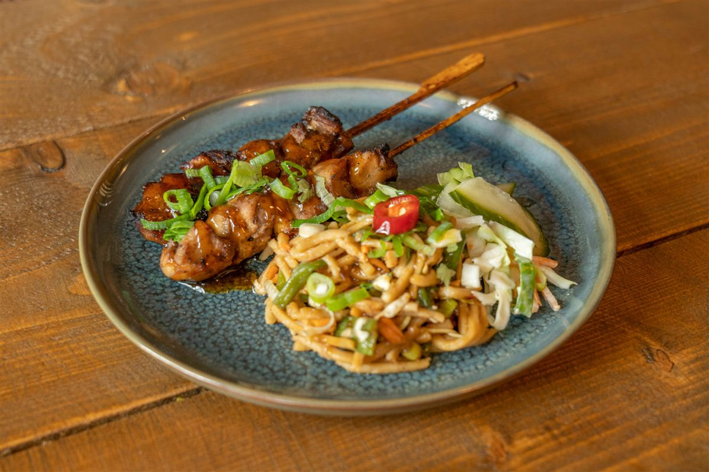
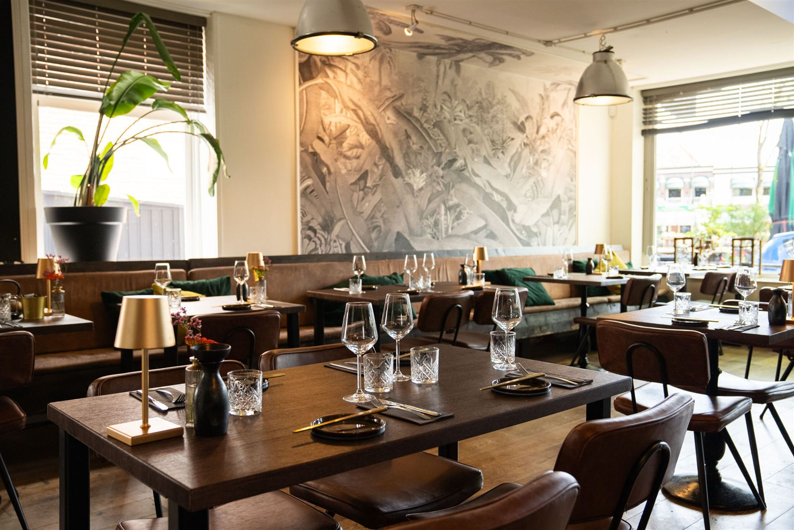
Parkeren is gratis, voor de deur of om de hoek. Vol is vol, dus reserveer op tijd. Dieetwensen of allergieën? Laat het ons weten, wij regelen het graag.
24 december
Een 4-gangen menu waarbij u voor sommige gangen kunt kiezen, met voor sommige gerechten een plateau. Er is een apart vegetarisch menu.
Drank niet inbegrepen.
25 & 26 december
We beginnen met een plateau van 7 bites, daarna koude voorgerechten en salades tot warme gerechten met vlees, vis en vegetarisch. Ook speciale gerechten voor de kleintjes. Uitgeserveerd of als buffet, dat overleggen we vooraf.
Drank niet inbegrepen.
25 & 26 december
Een 4-gangen menu met keuze bij sommige gangen, met een apart vegetarisch menu en een kindermenu. Liever thuis? Ons kerstmenu is ook af te halen of te laten bezorgen: vraag ernaar.
Drank niet inbegrepen. Met muziek en entertainment.
31 december 2026 – 1 januari 2027
We maken van het restaurant een feestlocatie met een DJ en saxofonist, bier, wijn, mixdrankjes, bubbels en Stëlz, en snacks & bites zoals sushi, gyoza en Wagyu bitterballen. Er zijn staanplaatsen, lounge- en zitplekken, een dansvloer en aparte rokersplekken. Om 00:00 uur proost iedereen met een gratis glas bubbels.
Het walking diner (o.a. sushi, wraps, ossenhaas, gamba's en Korean chicken) reserveert u apart van het feestticket. Van 21:30 tot 22:30 uur is er een happy hour met kortingen op drankjes en gratis snacks.
Bingo, sushi workshops en feestdagen: dit staat er op de planning.
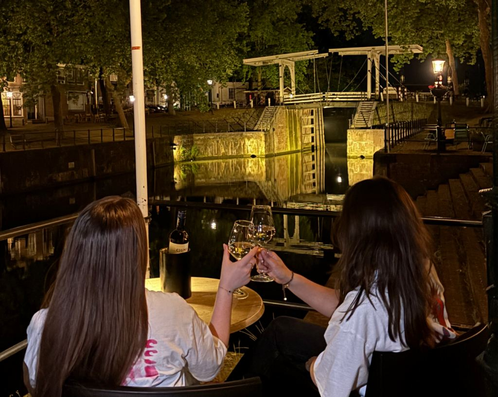
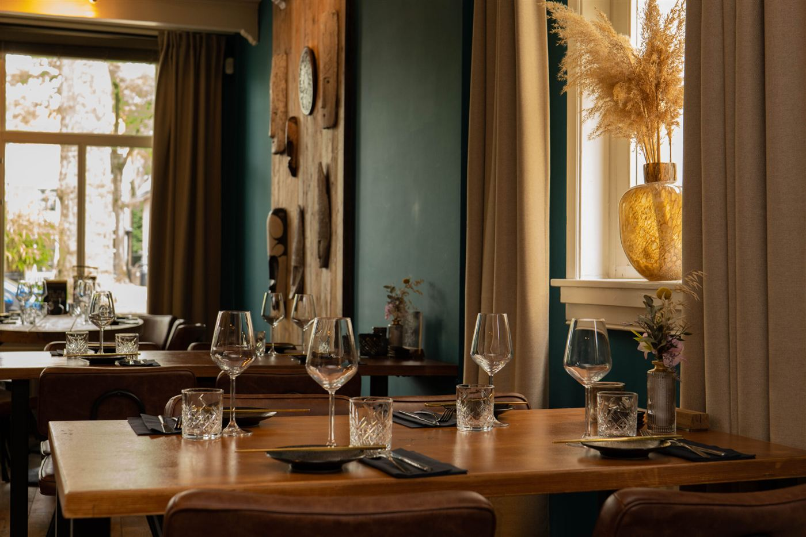
Met een groep komen lunchen, dineren, een high tea, buffet, borrel of feest vieren? Dat kan. Voor grotere gezelschappen, een zakenlunch of -diner, vergadering of bijeenkomst is er onze Business Lounge. Informeer gerust naar de mogelijkheden.
Groepsaanvraag sturen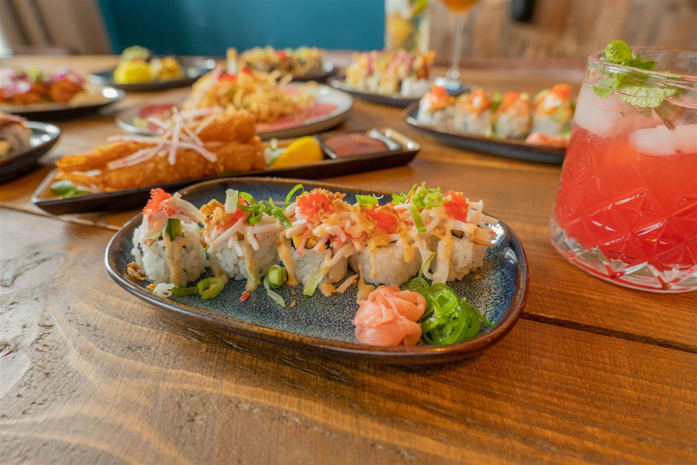
Catering op maat voor iedere gelegenheid in de omgeving van Utrecht, met verse producten en voor een eerlijke prijs. Stel uw eigen arrangement samen, bijvoorbeeld een Singapore- of Indo-buffet of een walking diner op locatie, eventueel met drankarrangement. Liever een foodtruck? We hebben een eigen foodtruck.
Catering aanvragen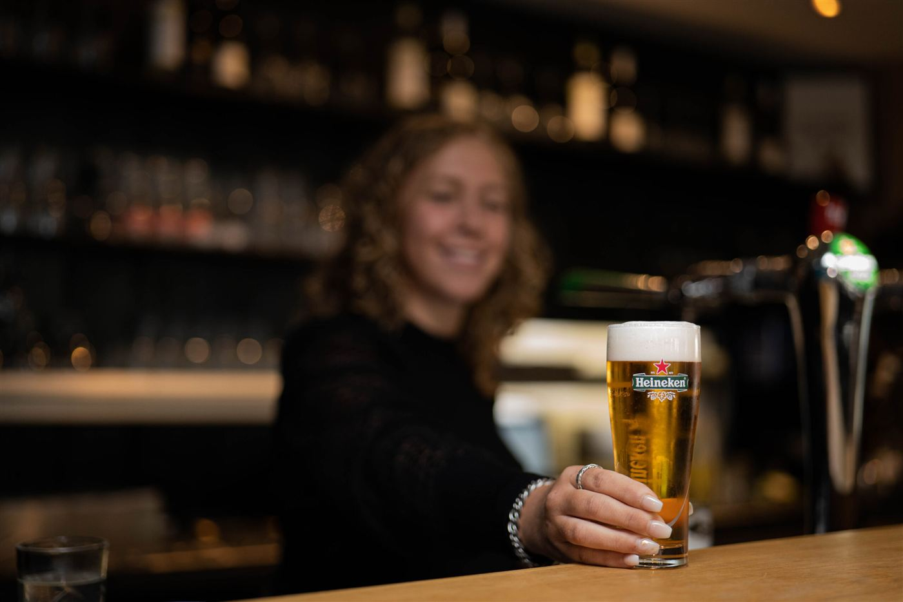
Heeft u voor uw catering meer servies en benodigdheden nodig dan u in huis heeft? Naast de catering kunt u bij ons ook faciliteiten huren voor uw gelegenheid.
Vraag naar de mogelijkheden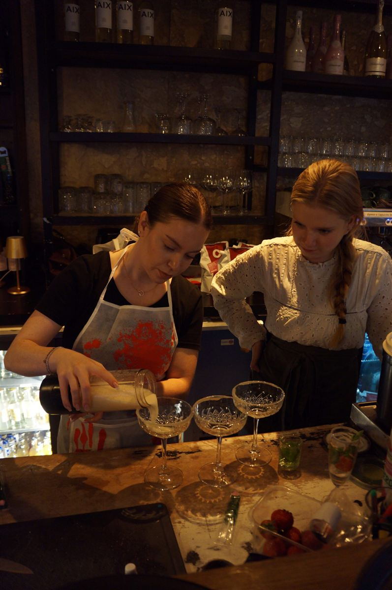
Wij zoeken collega's voor de keuken en de bediening.
Ons restaurant ligt in het pittoreske Vreeswijk, met een terras aan het water en uitzicht op de Kolk. Gratis parkeren voor de deur en gratis WiFi (vraag het personeel om het wachtwoord).
The Good Food| Maandag | gesloten |
|---|---|
| Dinsdag t/m vrijdag | 17:00 – 23:00 |
| Zaterdag en zondag | 12:00 – 23:00 |
Keuken tot 21:30. Lunch za en zo 12:00 – 14:30.
24-12 eerder gesloten · 25-12 en 26-12 op reservering geopend · 31-12 en 01-01 eerder gesloten. Overige dagen normale openingstijden.